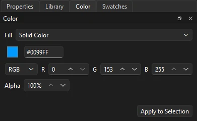
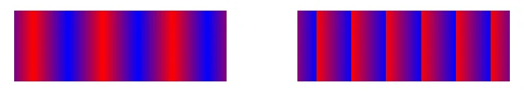
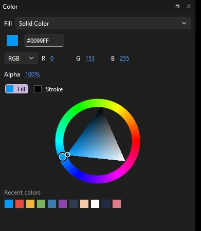
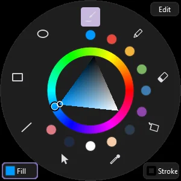
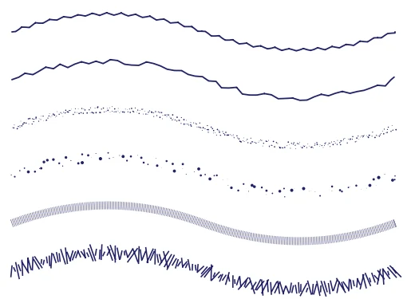
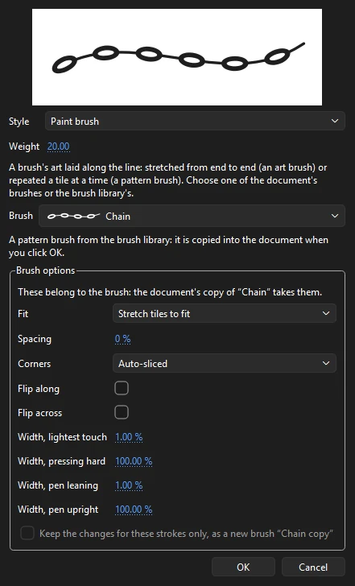

Drawing
Color, fills and strokes
Every shape has a fill, a stroke, or both. Fills can be solid colors, gradients or bitmaps; strokes have a color, a width, a style and a width profile. This page covers choosing colors, building gradients and bitmap fills, placing them, keeping colors in swatches, and styling strokes.
Picking colors
The quickest way to set colors is the pair of overlapping swatches after the tools in the toolbox: the fill, a solid square, at the top left, and the stroke, a square ring, at the bottom right. Click either one to bring it to the front and open a color picker, where you can also set transparency (alpha). The color picker can also take a color from anywhere on your screen.
- Black and white
- The small button beside the swatches sets a black stroke and a white fill, turns both on, and makes the fill a solid color again.
- Swap colors
- The other button swaps the stroke and fill colors. Whether each is on swaps too: with only the fill on, only the stroke is on after a swap.
- No color
- A red line across a swatch means no fill or no stroke. To draw without one, uncheck Fill or Stroke on the Tool tab, or choose None in the Color panel for the fill.
These buttons have no keys by default; there is no command for them in Keyboard Shortcuts.
The Tool tab shows the same two colors under Color and Style, each with a checkbox to turn it off. To change the colors of artwork that is already drawn, select it with the Selection tool and use the swatches on the Object tab, where the fill also has an alpha percentage. A shape filled with a gradient or bitmap shows Edit... there, which opens its fill in the Color panel; change it and click Apply to Selection to put it back.
Picking a color with the toolbox swatches or the Swatches panel also recolors the selected shapes: a fill color fills them, a stroke color recolors their strokes.
For the quickest pick of all, press ` (the key left of 1) over the stage to open the pop-up palette at your pen or mouse.
To change one color everywhere it is used in the document, in fills, strokes, gradients and text, use Find and Replace with Color.
To take a color from existing artwork, use the Eyedropper.
The Color panel
Open it from the Color tab in the panel dock, or (Ctrl+Shift+F9). It edits the fill: the Fill list chooses the type of fill new artwork gets, and the page under it changes to match.

- None
- No fill. New shapes are drawn as outlines only.
- Solid Color
- A single color, with its hex value and its channels.
- Linear Gradient
- Colors blending along a straight line.
- Radial Gradient
- Colors blending outward from a center.
- Bitmap Fill
- An image from the library, tiled across the shape.
What you set in the panel is the fill for the next thing you draw with the shape tools, the Pen, the brushes and the Paint Bucket. To apply it to artwork that is already drawn, select it and click Apply to Selection. Apply to Strokes draws the selected shapes' strokes with it instead: a gradient or bitmap along a line, fitted to the lines it strokes. The panel's fill types are for the fill only; the stroke is always a solid color, which you can set with the color wheel under them, the toolbox or the Tool tab.
Solid colors
- The swatch opens the color picker, with alpha.
- The hex field takes a six-digit color such as
#FF8800. Typing one keeps the current alpha. - RGB shows red, green and blue, each 0 to 255. HSB shows hue (0 to 359°), saturation and brightness (0 to 100%). Switching between them changes only how the color is shown.
- Alpha is the opacity, from 0% (clear) to 100% (solid). Partly clear colors show over a checkerboard.
Each channel is hot text: drag across it to change it, or click and type.
Editing a gradient

A new gradient runs from white to black. Each color in it is a stop, shown as a pointer under the bar and filled with its color; the selected one has a highlighted outline.
- Add a stop: click the bar where there is no pointer. The new stop takes the color the gradient already has there, so the gradient looks the same until you change it. A gradient can have up to 15 stops.
- Set a stop's color: click the stop to select it, then click the swatch under the bar or type in the hex field beside it. Double-click a stop to open the color picker straight away. Each stop has its own alpha, set in the color picker, so a gradient can fade to clear.
- Move a stop: drag it sideways. A stop can pass its neighbors; the order follows where you drop it.
- Remove a stop: drag it well down off the bar and let go. It disappears while you hold it there. A gradient always keeps at least two stops.
- Flow
- What happens past the ends of the gradient, when a shape reaches beyond the gradient's span: Extend continues the end colors, Reflect mirrors the gradient back and forth, and Repeat starts it over each time.
- Linear RGB
- Blends in linear light, which gives brighter, more natural mid-tones between saturated colors. Without it, colors blend as their values are stored, which can look darker in the middle.

A radial gradient's center can be moved off the middle of its circle with the focal point, which gives a lit, off-center look. You set it on the stage with the Gradient Transform tool.
Bitmap fills
Choose Bitmap Fill, then pick an image from the list of library bitmaps, or click Import... to bring one in. New shapes are filled with the image, tiled: it is placed at its own size from the top-left corner of the shape and repeats across it. Use the Gradient Transform tool to scale, turn, skew or move it.
Breaking apart a bitmap on the stage (, Ctrl+B) also gives a bitmap fill: a shape of the image's size, filled with the image once rather than tiled, which you can then cut, erase and reshape like any other shape.
The color wheel and recent colors
Under the fill settings is a color wheel, for picking a color by eye rather than by numbers.

- Click Fill or Stroke above the wheel to choose which color it sets. Each button shows that color now.
- Drag around the ring to choose the hue: red, orange, yellow, green, blue, purple.
- Drag inside the triangle to choose how strong and how light the color is. Its point is the pure hue, one corner is white and the other black.
The color changes as you drag, so you can watch the swatches. When you let go, the selected shapes take it, as they do from a swatch. With a gradient chosen, the wheel sets the color of the picked gradient pointer instead.
Recent colors, under the wheel, are the colors you have drawn with lately, newest first. Click one to use it again, for the fill or the stroke as the buttons above say. The list keeps the last sixteen and is remembered the next time you start Phoenix. The same colors are in the pop-up palette.
The pop-up palette
The pop-up palette puts your favorite tools and colors right where you are drawing, so you do not have to reach for the panels.

- To open it, press ` (the key left of 1) with the pointer over the stage, or choose . It opens centered on the pointer, and works with a pen as well as a mouse.
- Tools sit around the edge. Click one to switch to it.
- Recent colors are the dots inside the tools. Click one to draw with it.
- The wheel in the middle works like the Color panel's. It sets the color the tool in use draws with: the stroke for the Pencil, Line, Pen and Ink Bottle, otherwise the fill. Click Fill or Stroke in the bottom corners, or press X, to switch.
- Edit lists every tool: check the ones you want around the edge, up to ten. Reset Favorites puts back the Brush, Pencil, Eraser, Paint Bucket, Eyedropper, Selection, Line, Rectangle and Oval.
It closes when you pick a tool or a recent color, click outside it, or press Esc or ` again. Right-clicking the stage normally opens the stage menu. If you would rather it opened the pop-up palette while you draw, turn on Right-click with a drawing tool opens it in Preferences. To give the palette a different key, use Keyboard Shortcuts.
The Gradient Transform tool
Gradients and bitmap fills are fitted to the shape when you draw it: a linear gradient spans the shape from left to right, a radial one fills it from the center, and a bitmap starts at its top-left corner. To change how they sit, press F for the Gradient Transform tool (it shares a slot with Free Transform) and click inside the fill. Its handles appear, and dragging any of them reshapes the fill live:
| Handle | Drag it to |
|---|---|
| Center circle | Move the whole fill |
| Square on the side | Stretch or squeeze the fill along its width. For a linear gradient, this sets how long the run of color is |
| Square on the bottom | Bitmap fills only: stretch the image along its height |
| Ring | Turn the fill about its center. It sits at a corner for linear gradients and bitmaps, and at the bottom for a radial gradient |
| Circle with an arrow | Radial gradients only: scale it evenly in every direction |
| Triangle | Radial gradients only: slide the focal point along the gradient's width, off the center toward either edge |
| Diamonds on the top and left edges | Skew the fill: drag one along its edge to slant it |
For a linear gradient, two lines show where its colors begin and end; past them, the Flow setting takes over. Each drag is one step to undo.
The tool works on the fills of shapes, merge drawn or drawing objects. It does not reach a gradient or bitmap drawn along a stroke, or the fill of a rectangle or oval primitive; break a primitive apart first to adjust its gradient.
The Paint Bucket can also place a gradient as it fills: drag instead of clicking to lay it along the drag.
Lock fill
Normally each shape gets its own copy of a gradient or bitmap, fitted to that shape. With Lock fill on, a gradient or bitmap is laid over the whole stage instead, and each area you paint shows the part of it that lies there. Paint several separate areas and they read as one sweep of color, as if cut from one sheet. Lock fill is on the Tool tab of the Paint Bucket and of the three brushes (Brush, Nib Brush and Ink Brush); solid colors are not affected.
Swatches

The Swatches panel (, Ctrl+F9) shows the document's saved colors. Hover over a swatch to see its hex value, and its alpha if it is partly clear. Click a swatch to make it the fill color, or the stroke color when the panel's Stroke option is checked. Add Swatch saves the current fill color. Right-click a swatch to duplicate or delete it. Swatches are saved with the document, including FLA files. They hold solid colors; gradients are not kept as swatches.
The ☰ menu beside Add Swatch has the rest:
- Sort by Color
- Grays first, then the colors in hue order.
- Clear Colors
- Leaves only black and white.
- Load Default Colors, Save as Default
- Your own default palette, kept by Phoenix for every document, or the built-in one until you save one.
- Web 216
- The 216 web-safe colors.
- Add Colors..., Replace Colors..., Save Colors...
- Color tables in and out: Adobe Color Table (
.act) files and GIMP palettes (.gpl). Add Colors puts a file's colors after the ones you have; Replace Colors puts them in place of yours. An.actfile holds at most 256 colors, so Save Colors keeps the first 256 if you have more.
The built-in palette is a gray ramp of six steps from black to white, then red, green, blue, yellow, cyan and magenta, then the 216 web-safe colors. Adding, sorting, clearing and loading colors are each one step to undo.
Tagged swatches
Right-click a swatch and choose Convert to Tagged Swatch... to give it a name. A tagged swatch is a color of the linked palette in use: everything already painted in its color is linked to it, and changing it recolors all of that at once. Tagged swatches show a turned-down corner; Edit Tagged Swatch... opens the Palettes panel to change one.
Stroke styles
Set a stroke's look on the Tool tab before drawing, or on the Object tab for selected strokes. The same settings appear in both places:
- Stroke size
- The weight, from 0.1 to 200 pixels.
- Style
- Solid; Hairline, which stays one screen pixel wide at any zoom; Dashed; Dotted; and three hand-drawn styles, Ragged, Stipple and Hatched.
- Cap
- How the ends of an open line look: Round, None (cut off flat at the end point) or Square (flat, but reaching half the stroke's width past the end).
- Join
- How corners look: Round, Miter (a sharp point) or Bevel (the point cut off). For Miter, the Miter limit beside it, from 1 to 60, is how many stroke widths the point may reach before it is beveled instead, so very sharp corners don't spike.
- Scale
- Whether the stroke thickens when its object is scaled: Normal (it scales with the object), Horizontal or Vertical (it follows scaling one way only), or None (it keeps its width).
- Hinting
- Marks the stroke for pixel hinting. It is saved with the stroke for players that snap thin lines to whole pixels; Phoenix draws the stroke the same either way.
- Width
- The width profile: Even, Taper Both Ends, Taper Start, Taper End, Swell (fat in the middle) or Pinch (thin in the middle). A stroke shaped with the Width tool shows Custom. Variable-width strokes in FLA files keep their profiles.
- Brush
- A paint brush or graphic symbol drawn along the stroke instead of a line; see Paint Brush.

The Ink Bottle applies the whole current stroke style to a stroke you click, and the Eyedropper picks up a stroke's color and weight.
Custom Stroke Style
The ... button beside the Style list, on either tab, opens Custom Stroke Style, with a preview stroke drawn as you change it. Style chooses what the stroke is: Solid, Hairline, Dashed, Dotted, Ragged, Stipple, Hatched, Paint brush or Symbol brush; a line under it says what that is, and Weight sets the stroke's weight. Then come the kind's own settings: the dash and gap lengths of a dashed stroke; the dot spacing of a dotted one; a ragged line's pattern, wave height and wave length; a stipple's dot size, dot variation and density; a hatched stroke's thickness, space, jiggle, rotation, curve and length; and for a symbol brush, the graphic symbol and whether it is stretched or repeated. A solid stroke and a hairline have none beyond their weight; their cap, join and width are on the Properties panel. Choosing another style starts its settings from their defaults.

For a Paint brush stroke, Brush chooses the brush, from the document's own and the Brush Library's (one from the library is copied into the document when you click OK). Under it are the brush's options: for an art brush, which way its art runs, how it fits the stroke's length (scaled proportionately, stretched to fit, or stretched between guides, the ends past the guides keeping their proportions), flipping it across, and bending it round sharp corners; for a pattern brush, how its tiles fit (stretched, spaced out, or approximating the path), the spacing between them, how they turn corners, and flipping them along or across; for both, the narrowest and widest a pen's pressure and tilt draw the stroke. The options belong to the brush, so changing them changes every stroke drawn with it, as the dialog says; to change only the strokes being edited, check Keep the changes for these strokes only, and they draw with a new copy of the brush instead.
A stroke can vary in width along its length. Choose a profile from the Width setting, or shape one with the Width tool.
The Eyedropper
Press I and click artwork to take its color as the current one:
- A solid fill becomes the fill color.
- A gradient fill becomes the fill: its stops, its Flow and its Linear RGB setting, as a linear or radial gradient.
- A bitmap fill makes that bitmap the fill.
- A stroke gives its color and weight to the stroke. Its style is not taken.
It samples shapes and rectangle and oval primitives, and reference images: click a reference picture to take the color of that spot as the fill color. Then Phoenix switches to the Paint Bucket after a fill, or the Ink Bottle after a stroke, so you can apply what you picked up straight away. See Eyedropper on the drawing tools page.
To check how light and dark your colors are against each other, turn on View › Grayscale. The stage shows in shades of gray while every color stays as it is.
Paint Bucket and Ink Bottle
The Paint Bucket (K) fills an enclosed area, or recolors a fill, with the current fill: a solid color, gradient or bitmap. Its Gap size lets it fill an outline that doesn't quite close: Close Small Gaps, Close Medium Gaps and Close Large Gaps bridge openings of about 3, 8 and 20 screen pixels. Because the gap is measured on screen, zooming out closes wider gaps and zooming in closes narrower ones. Don't Close Gaps fills only areas that are fully closed.
The Ink Bottle (S) gives the current stroke color, size and style to a stroke you click, or adds a stroke around a fill. Both tools are described in full under Paint Bucket and Ink Bottle.